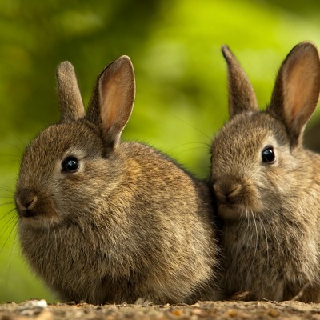
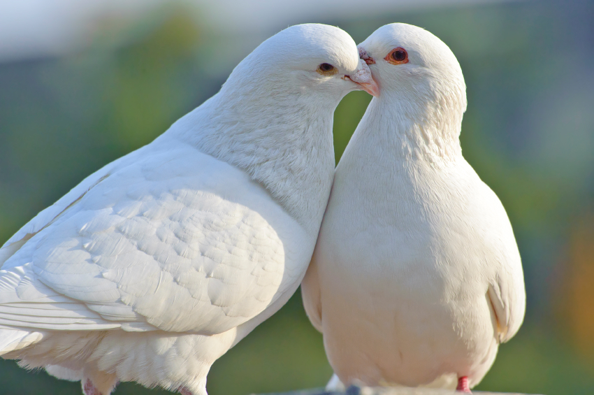

Rabbits are small mammals in the family Leporidae of the order Lagomorpha.
Male rabbits are called bucks; females are called does.
As livestock, I bred rabbits for their meat and fur.
Doves constitute the animal family Columbidae and the order Columbiformes
They are stout-bodied birds with short necks, and short slender bills that in some species feature fleshy ceres.
They primarily feed on seeds, fruits, and plants.
